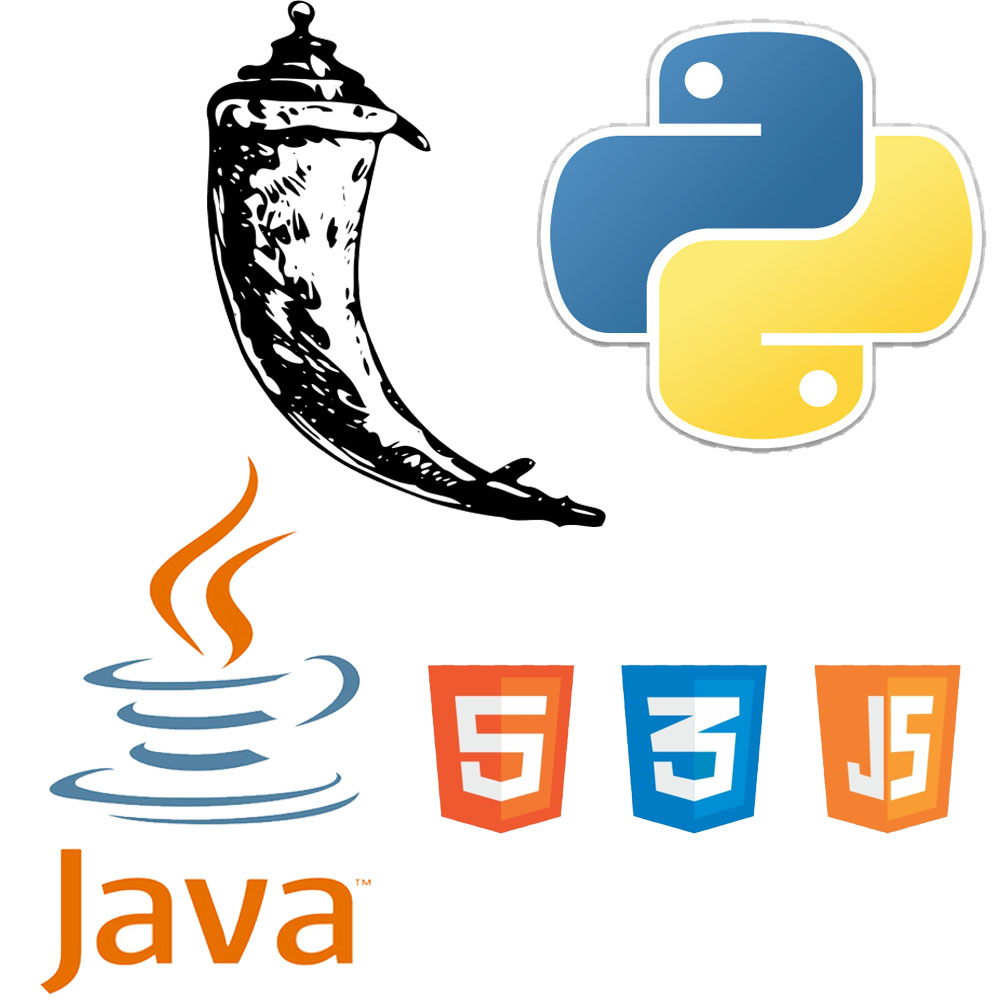

{% extends 'home.html' %}
{% block title %}Coding Languages{% endblock %}
{% block header %}Coding Languages{% endblock %}
{% block subheader %}{% endblock %}
{% block firstpic %}{% endblock %}
{% block first %}
Programming
{% endblock %}
{% block firstpara %}
The languages I've learned so far, I have learned from studying them in classes
I took at Concordia. The languages I know are Java, HTML, CSS, Python, Flask, Javascript and a few
frameworks such a Jinja2. As of now, the language I am most confident in is without a doubt
Java. {% endblock %}
{% block secondpara %}I really enjoy programming and imagining that one day soon I will be actually
be working somewhere where I will be getting paid to program is so exciting. I plan on learned
another object oriented programming language. They do not teach this language to us at Concordia in the
Software Engineering program, perhaps because it is so similar to Java. My next goal for myself will be
to learn C++ as it is so commonly used in today's programming industry.{% endblock %}